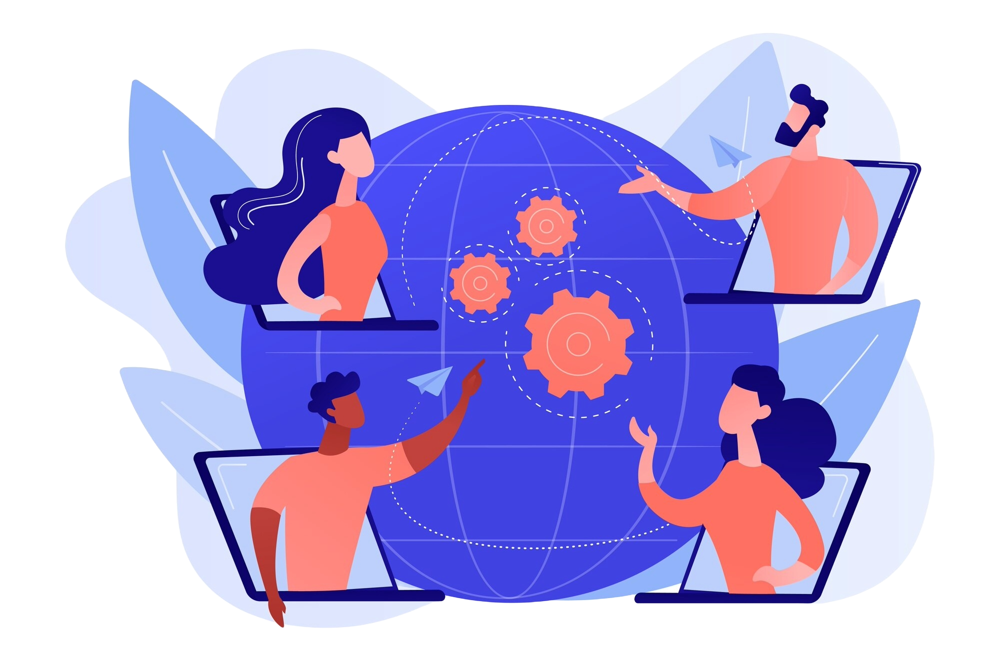
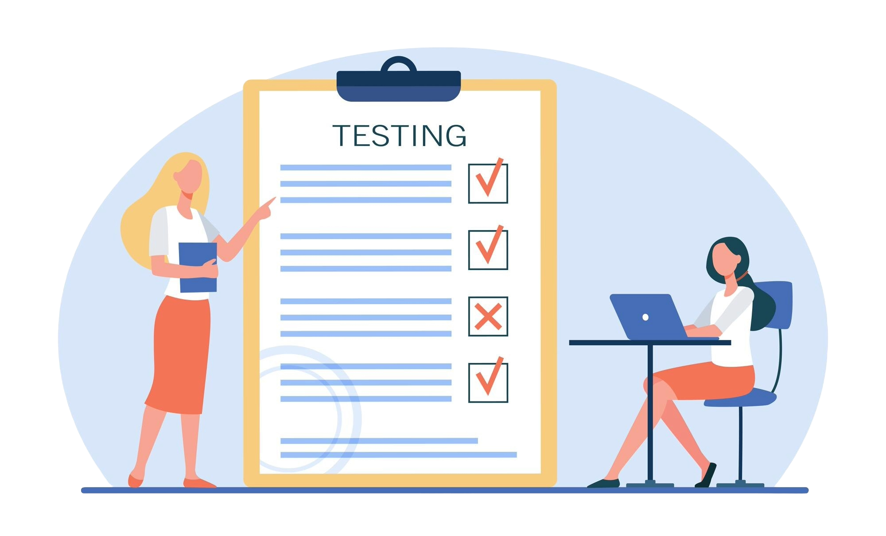

Welcome to the Canvas site for the course Technology and Society for Programmers! Digital competence is a key factor in ensuring the employability of candidates in all professions vital to our society. This course will provide an overview of how technology affects our lives as individuals, its impact on our social structures, the way we work and how we in turn create, shape, or choose our technology. Social media, digital governance, and artificial intelligence are all examples of how technology has profoundly changed our everyday lives in the last few decades. An understanding of the benefits and limitations of technology is vital in any profession, regardless of field or specialty.In this course, you will acquire the basic knowledge required to harness the potential of technology and recognize its limitations and potentially harmful consequences on work and society. You will learn to identify the opportunities to use technology to foster inclusion and participation in an increasingly diverse and multicultural society. You will practice communicating orally the concepts they acquire in a structured manner.
The modules in Canvas make up the main part of what you need to learn in this course. One module is published at the beginning of each week and contain mini-lectures, text and assignments that replace the conventional format of weekly auditorium lectures. Each module has an introduction video followed by videos that explore different aspects of the module’s theme. To turn on the captions, click CC on the menu line. Some videos will present concepts and theoretical perspectives and others will present cases - such as an example of how a specific technology is being used in a profession. The modules will be published weekly (one each week), and there are eight modules in total (0-7). Canvas: Canvas Log in
In the physical lectures,of which there are 4 in this course, we will focus on methodology, rather than the content from Canvas. They will be very valuable in attaining the general competency of this course and solving the obligatory assignments, by improving your knowledge of how to describe, discuss and evaluate issues arising at the intersect of technology and society. The first lecture is an orientation meeting, on Thursday 24.08, which is highly recommended as an introduction to the course and how to succeed. Some lectures will come with their own obligatory assignments related to the lecture (more information will follow.) The lectures are not obligatory. Some lectures will be streamed online on zoom: Zoom
The multiple-choice exam is scheduled for 30.11.2023. This is an individual 24 hour, online, multiple-choice home exam containing questions which range across the various themes introduced in the Canvas modules. To qualify for the exam you will need 5 approved obligatory group assignments. We would like to emphasize that changes might occur, but if they do, you will be notified of any changes through the Announcements page in the menu on the left side, therefore we highly recommend you keep an eye on it. Good luck with the course! You will find more information about the course on OsloMet's site by following this link: Course description
